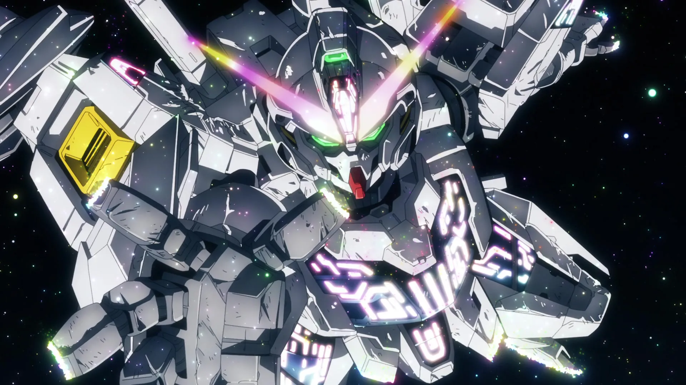

Best anime: 5 series worth watching 2023
2023 is shaping up to be yet another spectacular year for anime fans. We’ve only just managed to catch our breath from the avalanche of the best anime 2022 had to offer, and we’re already swimming in an embarrassment of riches this season.
OSHI NO KO
From the writer behind Kaguya-sama: Love is War, Aka Akasaka, comes Oshi no Ko, another brilliant series, though in a different way. While Kaguya-sama is good at making you cringe, laugh, and cheer for the young lovers, Oshi no Ko is pretty good at making your stomach churn from the coverage of real topics that plague the entertainment industry. Every episode of Oshi no Ko introduces a new twist, paired alongside stunning animation by studio Doga Kobo.
It’s really hard to describe the premise of Oshi no Ko without spoiling any of the twists, but it starts with a young promising idol named Ai Hoshino moving to the countryside due to an unplanned pregnancy. Her doctor, who is a fan of Ai, is mysteriously killed and reincarnated as one of her twin children. The other twin is reincarnated from one of the doctor’s former patients – who is also a huge Ai fan. While not knowing who the other is, they’re trying to figure out what’s going on while navigating the entertainment industry.
It sounds weird, I know. But if you love mystery and drama, you will need to give Oshi no Ko a watch. It’s a series where you just have to finish the first 80-minute(!) episode to really understand the hype and it’s best watched while knowing very little beforehand. —JL

MOBILE SUIT GUNDAM: THE WITCH FROM MERCURY
Simply put, Mobile Suit Gundam: The Witch From Mercury is a show that has everything. Put aside the storied and intimidatingly complex franchise it’s a part of for a moment — Witch From Mercury does an astounding job of standing on its own two feet, with plenty to offer if you’ve never seen a Gundam and never will again. (I hope you do, though.) Equal parts romance, comedy of manners, sci-fi mech brawler, political thriller, and slice-of-life boarding school drama, The Witch From Mercury succeeds by wearing all of its influences on its sleeve in a mashup that’s thrilling for both the fact that every episode has something new in store and also for the care it takes in developing its entire cast.
The Witch From Mercury starts out full of Gossip Girl-type snobs in a military school and slowly makes them all confront the reality they’ve been sheltered from, forcing them to consider the cost of the games they play and bringing the socioeconomic strife they benefit from to their doorstep. Through its protagonist, the naive, sweet, and gifted pilot Suletta Mercury, the series deftly explores cycles of abuse and oppression, with an interest in how power protects itself, and what it takes to disrupt that power. And yes, it’s also a killer Gundam show, one that constantly has homages to and remixes what came before in a way that’ll please new fans as it hooks a new generation of them. —JR
It sounds weird, I know. But if you love mystery and drama, you will need to give Oshi no Ko a watch. It’s a series where you just have to finish the first 80-minute(!) episode to really understand the hype and it’s best watched while knowing very little beforehand. —JL
DEMON SLAYER: KIMETSU NO YAIBA - SWORDSMITH VILLAGE ARC
Demon Slayer: Kimetsu no Yaiba returns for an all-new season, picking up from the momentum of Entertainment District Arc’s intense finale to deliver a story that, while beautifully animated and an entertaining watch moment-to-moment, nonetheless feels overlong and minor in the grand scheme of the series’ ongoing plot.
The third season of Demon Slayer: Kimetsu no Yaiba, titled Swordsmith Village Arc, follows series protagonist Tanjiro Kamado and his sister Nezuko as they journey to a secret village in order to repair his sword following his battle against the Upper Rank demons Gyutaro and Daki. Upon arriving, Tanjiro finds himself once again ensnared in a battle with two more Upper Rank demons, fighting alongside the Mist Hashira Muichiro Tokito, the Love Hashira Mitsuri Kanroji, and his taciturn ally Genya Shinazugawa in order to protect the village’s inhabitants.
To tell the truth, there’s much to dig into as far as the plot line of this season is concerned; both at the risk of spoiling one of the most touching moments of the series at the end of this season and for the fact that there’s not really much in the way of a plot to speak of. As far as the strengths of this season are concerned, Demon Slayer: Kimetsu no Yaiba - Swordsmith Village Arc is first and foremost a spectacular visual experience, packed with the sort of breathtaking sword fights and action sequences fans of the series have come to expect from anime studio Ufotable. As far as the season’s writing is concerned, the third season of Demon Slayer: Kimetsu no Yaiba offers little in the way of genuine twists or shocking revelations to chew on.
Even still, Demon Slayer: Kimetsu no Yaiba - Swordsmith Village Arc is a satisfactory installment in the long-running series, performing the unenviable task of bridging the divide between two of the most consequential arcs of Demon Slayer: Kimetsu no Yaiba and setting the stage for an exhilarating future going forward. —TE